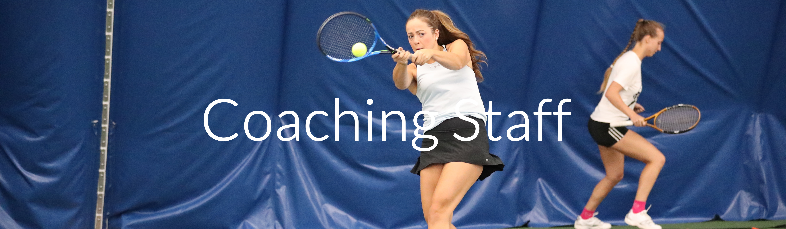

Coaches of the UOTC:

Zhenya Kondratovski is the Head Coach for the University of Ottawa Tennis Club. He is a full-time coach at the Rockcliffe Lawn and Tennis Club.
Zhenya started playing tennis at the age of nine at the Dynamo Sports School in Minsk, Belarus. As a junior player, he competed provincially and nationally and was ranked in the top twenty in the USSR. He was the Belarus men’s doubles champion in 1989, registered wins over top ten players in the country in his age category. Zhenya was also a regular hitting partner for junior national teams, ATP and WTA players.
He earned a B.A. in Coaching and Physical Education from Belarus Institute of Physical Culture and Sports in 1990 and M.A. in Sport Studies (Sociology of Sports) at the University of Ottawa, 1995. He joined the Ottawa U tennis team in 1993-1994, then became an assistant and a head coach in 1997.
Zhenya is a four time NCTA City Open Champion in singles and doubles, an Ontario Open Doubles finalist and a Kunstadt Open finalist. Zhenya was the full-time pro at RTSC since 1995 and head pro from 2007-2017 and worked with many provincial, national and NCAA caliber players. He is a Tennis Canada certified Coach 2 and Club Pro 2, Cardio Tennis Certified and a member of the TPA.
Zhenya is a recipient of the Coaching Excellence Award from Tennis Canada. In the past year and a half, he has been a coach with the Sports Training Academy and recently the Ontario Tennis Association regional coordinator for Ottawa. Zhenya believes in sharing his knowledge, experience and love of the game with his students. He is always open to learning and finding new ways to transmit habits and knowledge of the game, which keeps evolving and changing.

Derian Valcourt is an Assistant Coach for the University of Ottawa Tennis Club. He is a full- time coach at the Rideau Sports Centre, a certified instructor and Club Professional 1 with Tennis Canada as well as a Certified Coach with Canada Sports. The previous President of the University of Ottawa Tennis Club, he has facilitated various relationships for the Club, fostered its growth, and continues to guide the club.
Paul Henry is an Assistant Coach for the University of Ottawa Tennis Club. He has coached at various tennis facilities around Ottawa over a period of over 40 years. Well admired by the community, he continues to be active both as a player and coach.
Advisory Board Members
Dr. Alireza Jalali is the Head of the Division of Anatomy, and the Interim Assistant Dean, External Relations at Faculty of Medicine, uOttawa. He has a Medical Doctorate and a Specialist Diploma in Sports Medicine from the University of Liège in Belgium. Since coming to the Faculty of Medicine in 2003, he has been teaching Anatomy passionately. He has developed an active research program in Educational Innovations use and usefulness: Podcasts, YouTube, TBL, Social Media, and 3D printing. Dr. Jalali also has an established track record of Leadership: UGME Unit Leader, Director of Practical exams and Social Media Advisor at Royal College. He has received numerous awards, including the 2020 University of Ottawa Teacher of the Year award. Dr. Jalali’s experience in leadership and problem-solving is beneficial for the President of the UOTC. He can provide suggestions on how to tackle both administrative, and social-related problems the UOTC may face in the future.
Dr. Erin Boynton is an Orthopedic surgeon, sports doctor, and past-chair of the research committee for the Canadian Orthopedic Foundation. She was the chief orthopedic surgeon and consultant to the Toronto Blue Jays, Toronto Maple Leafs and the Toronto Argos. She is the first female orthopedic surgeon to work with the MLB and NHL and is the current Medical Director for the Rogers Cup WTA tennis tour event in Toronto. Dr. Boynton’s role on the Executive Advisory Board is crucial as she provides the Executive Committee useful insight regarding ways the UOTC can improve its training methods during practices in order to improve and optimize the overall health of its athletes.
Mrs. Julie Smyth is a tennis enthusiast and member of the Rockcliffe Lawn Tennis Club (RLTC) in Ottawa. She has played and followed tennis for more than 30 years and is an active member of the Ottawa tennis community. Julie is a volunteer executive member of the RLTC Board of Directors, serving as Secretary. She was part of the Board in 2020 as the club navigated a challenging but successful reopening during the COVID-19 pandemic. As well as being an active member of the Board, Julie looks after RLTC's social media and helps with adult programming. She also took on the role of welcoming new members to the club and attends National Capital Tennis Association (NCTA) AGMs on behalf of RLTC. Julie has degrees in business and journalism, both from Ryerson University, and is a professional writer and editor. For more than two decades, she worked as a reporter at leading national newspapers in Canada and Scotland, then worked as a freelance writer, federal government speechwriter and marketing content creator. She has two teenagers, one of whom plays tennis. Her experience regarding board leadership and social media platform management is extremely beneficial for the UOTC; especially the Communications Executive.
Mr. Marinus Wins is the Treasurer for the National Capital Tennis Association (NCTA), the governing body regulating tennis in Ottawa. He is a member of the Athletics Wall of Fame for tennis at Carleton University. He was a member of Carleton University’s tennis team which twice won the team championships of the Ontario Quebec Athletic Association (OQAA). Currently retired, he enjoys playing tennis as much as he can. His experience with being a treasurer and handling money for a large tennis-related association will be beneficial in providing insight regarding budgeting, fees, expenses, and other suggestions to the UOTC; especially to the Treasurer of the UOTC.
Mr. Alan Cohen is a practicing lawyer who was a sessional lecturer at the University of Ottawa’s Faculty of Law for 13 years, leading a course in Municipal and Land Use Planning Law. Alan is a life-long tennis player with a love of the game that far exceeds his talent, but which will allow him to assist the UOTC Executive Committee in putting together various documents for administrative use and to advise on any organizational decisions.
Dr. Cameron Montgomery is a professor in the Faculty of Education at the University of Ottawa. Dr. Montgomery was a former Progressive Conservative Candidate for riding in Orleans. He continues to regularly play and enjoy the sport of tennis. Having significant experience with fundraising and attention building, Dr. Montgomery’s role on the board will help both Marketing and Communications Executives in approaching new sponsors, and growing our fundraising outreach.
Mr. Max Zimmerman is a graduate of the Honours program in Communications at the University of Ottawa. He began playing tennis at the age of six and played competitively in Ontario as a junior, reaching a ranking of 8th in the province back in 2007. His favorite shots are the backhand down the line and drop shot. Max was also the former Marketing Executive of the UOTC for two years. Max’s position on the board is beneficial for aiding the current Marketing Executive with different ideas for fundraising and clinic events.
Mrs. Rachel Gould represents the various Canadian University Tennis teams at Tennis Canada in the Development Department. An avid fan and player of tennis, her developmental feedback can be useful to all UOTC Executives in growing, and better developing the club.